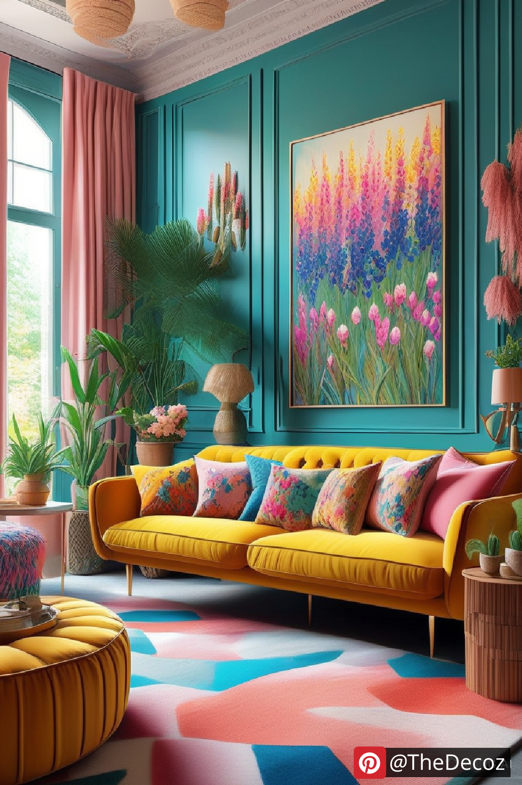
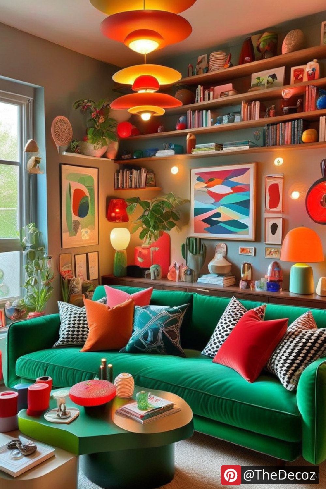
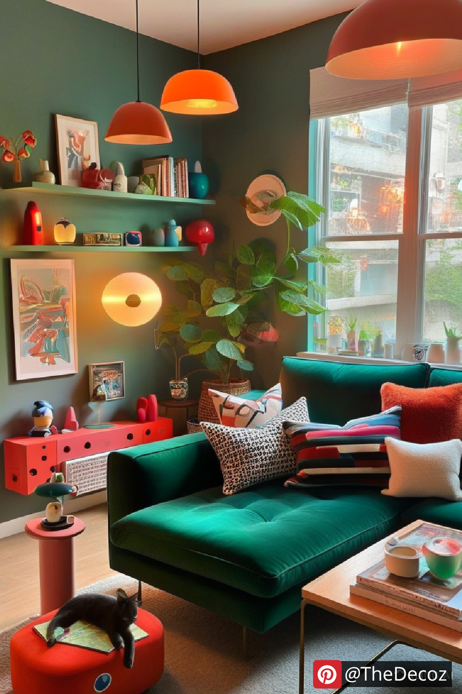
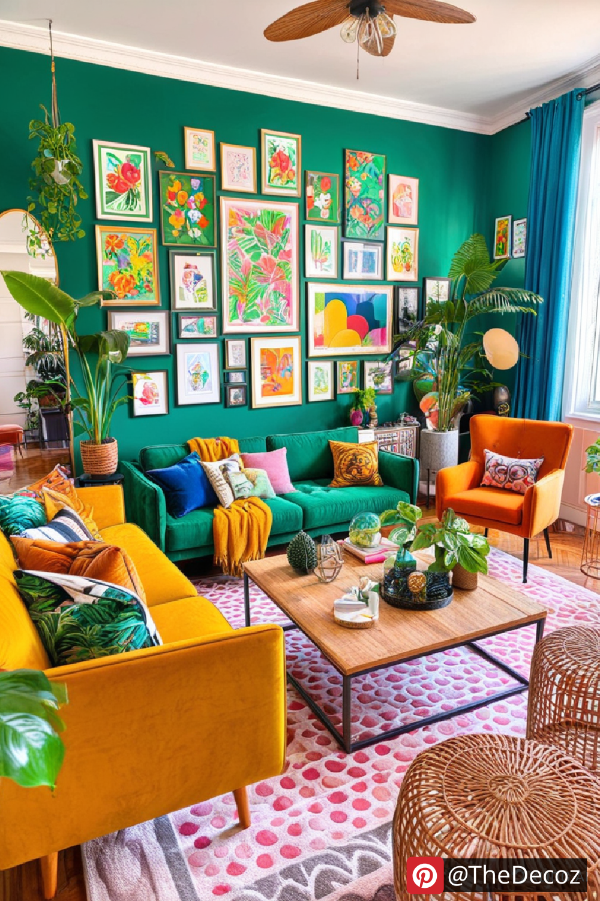
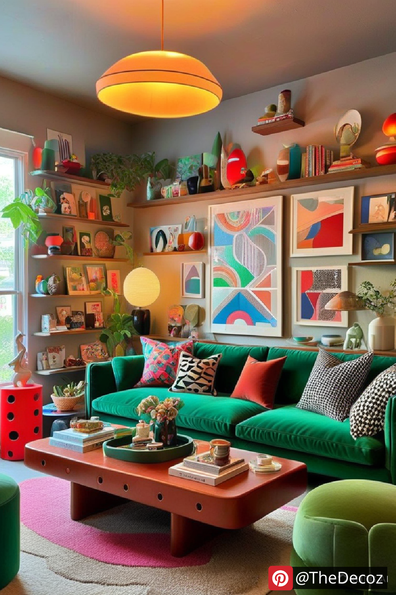

In the world of interior design, the living room is often considered the heart of the home. It’s where we gather with family and friends, unwind after a long day, and create lasting memories. One of the most effective ways to breathe new life into your living space is through colourful living room decor. This article will explore innovative ideas, tips, and trends to help you create a vibrant and inviting atmosphere that reflects your personality.
Colour has a profound impact on our emotions and perceptions. It can energize a space, create a sense of calm, or even evoke nostalgia. When it comes to living room decor, choosing the right colours can transform your environment. Here are some key benefits of incorporating colour into your living room:
Enhances Mood: Bright and bold colours can uplift your spirits, while softer hues can create a serene atmosphere.
Defines Space: Colour can help delineate areas within an open-concept living space, making it feel more organized and inviting.
Showcases Personality: Your choice of colours can reflect your personal style and preferences, making your living room uniquely yours.
When it comes to colourful living room decor, the first step is selecting a colour palette that resonates with you. Here are some popular colour schemes to consider:
If you’re looking to make a statement, opt for bold colours like electric blue, vibrant yellow, or fiery red. These hues can be used on accent walls, furniture, or decorative accessories. Pair them with neutral tones to balance the intensity and create a cohesive look.
For a softer approach, pastel colours such as mint green, blush pink, and lavender can create a calming and inviting atmosphere. These shades work beautifully in combination with natural materials like wood and linen, adding warmth to your living space.
If you prefer a more grounded aesthetic, consider earthy tones like terracotta, olive green, and mustard yellow. These colours can bring a sense of nature indoors, creating a cozy and organic feel.
Now that you have a colour palette in mind, it’s time to explore innovative decor ideas that will bring your vision to life.
An accent wall is a fantastic way to introduce colour without overwhelming the space. Choose a bold hue or a fun wallpaper pattern to create a focal point. This can be behind your sofa or a media unit, drawing attention and adding depth to the room.
Investing in colourful furniture pieces, such as a bright sofa or a statement armchair, can instantly elevate your living room decor. Look for unique shapes and designs that complement your colour scheme and add character to the space.
Artwork is a powerful tool for introducing colour into your living room. Choose pieces that resonate with your style and incorporate the colours from your palette. Additionally, consider colourful throw pillows, rugs, and curtains to tie the room together.
Incorporating plants into your decor not only adds a splash of colour but also improves air quality and brings a sense of tranquility. Choose vibrant planters that complement your colour scheme and place them strategically around the room.
The right lighting can enhance the beauty of your colourful living room decor. Consider using a mix of ambient, task, and accent lighting to create a warm and inviting atmosphere. Pendant lights, floor lamps, and wall sconces can all contribute to the overall aesthetic while highlighting your decor choices.
To keep your colourful living room decor looking fresh and vibrant, regular maintenance is essential. Here are some tips:
Regular Cleaning: Dust and clean your furniture and decor items to prevent dullness.
Protect from Sunlight: Use UV-protective window treatments to prevent colours from fading.
Rotate Accessories: Change out throw pillows and decor items seasonally to keep the space feeling new and exciting.
Incorporating colourful living room decor into your home is an exciting journey that allows you to express your creativity and personality. By choosing the right colour palette, exploring innovative decor ideas, and maintaining your space, you can create a vibrant and inviting living room that reflects your unique style. Embrace the power of colour and transform your living space into a joyful haven for you and your loved ones.
    